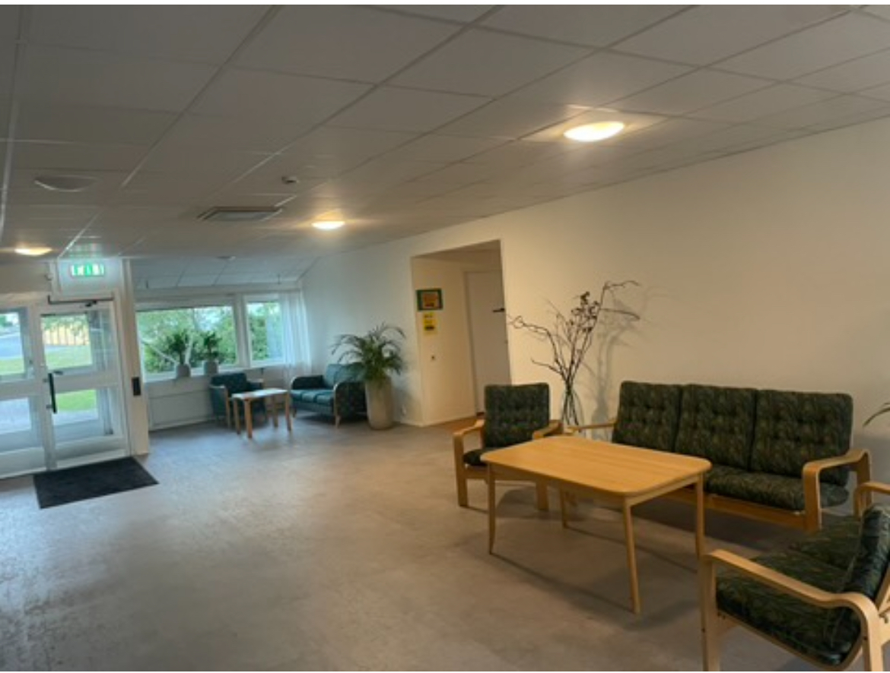
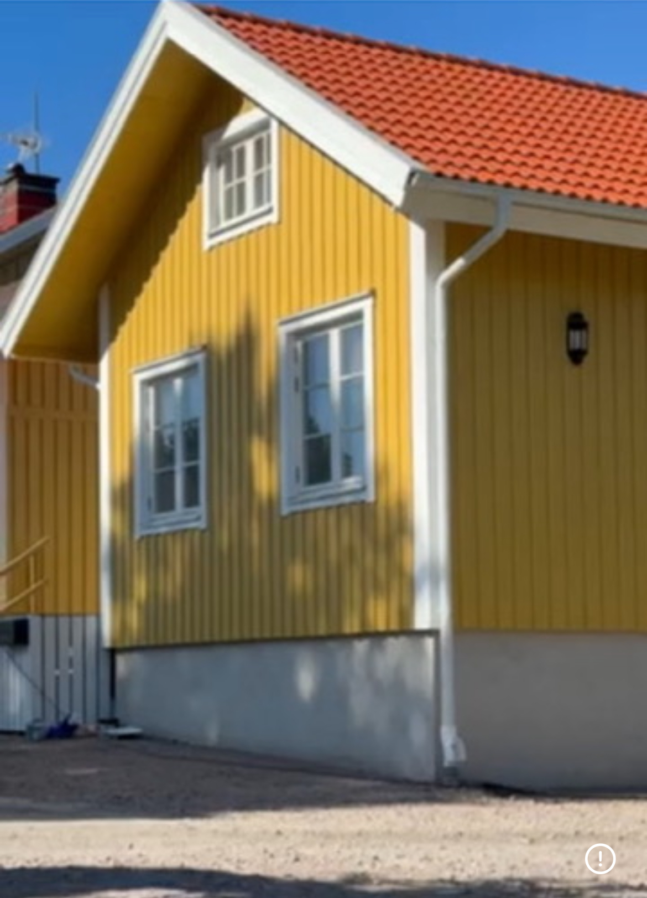
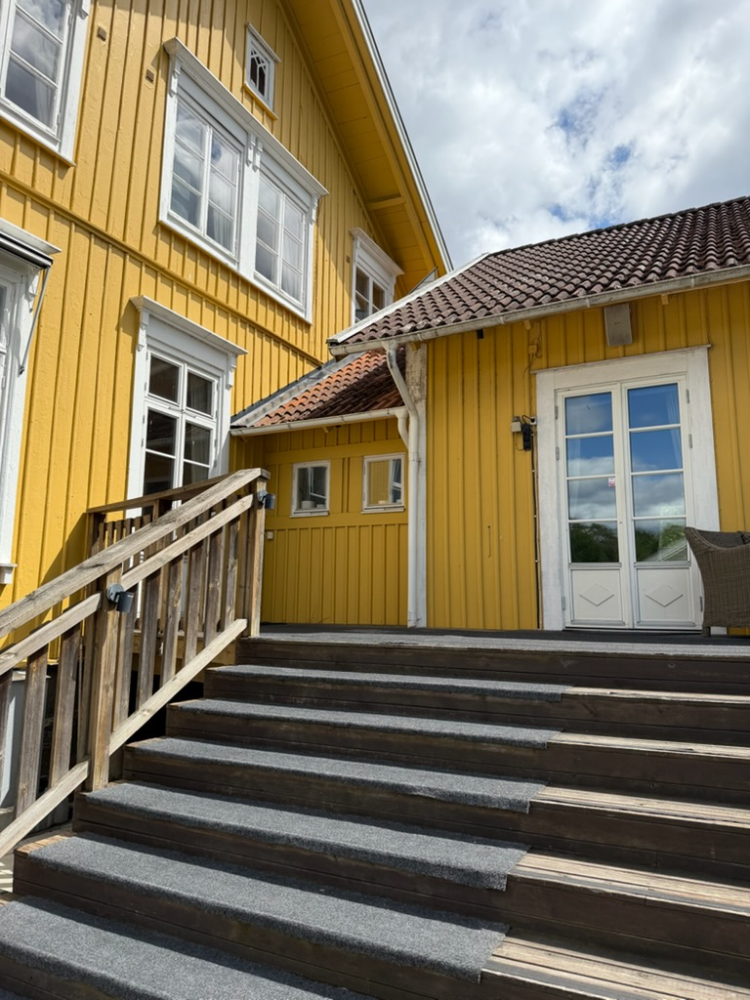
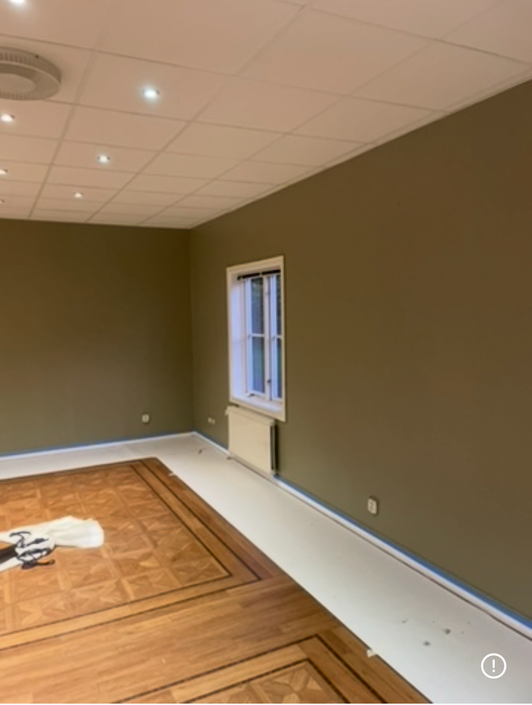
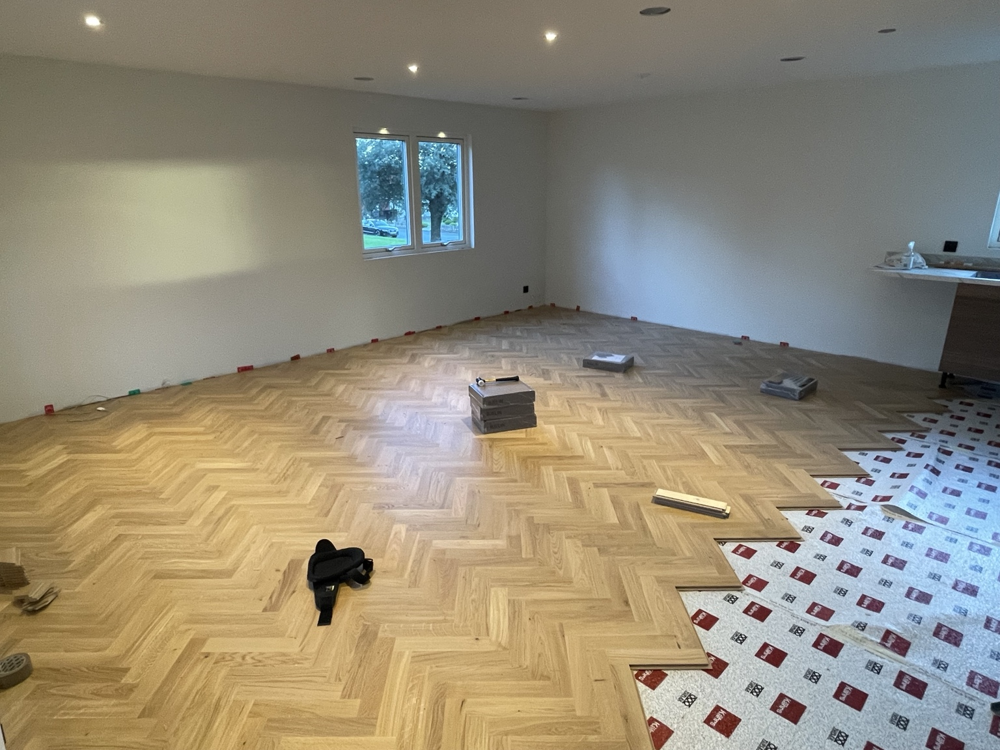
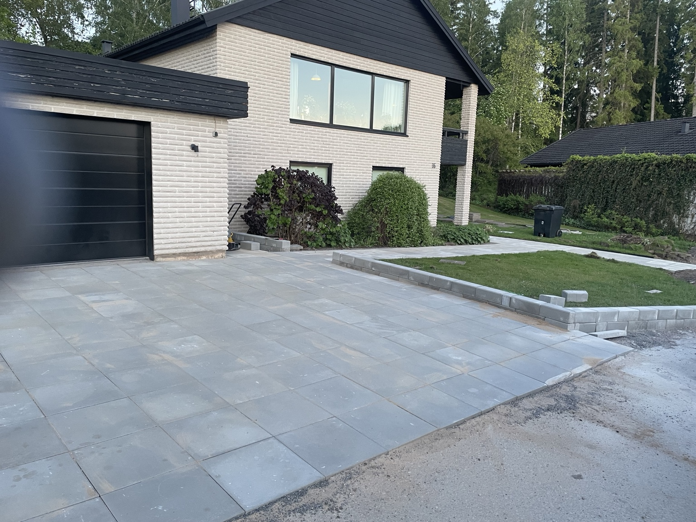
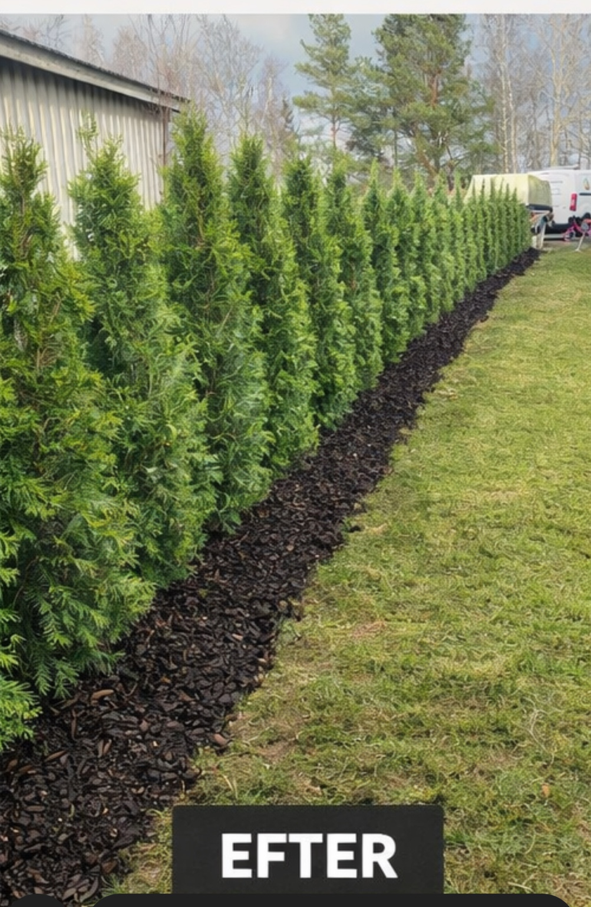
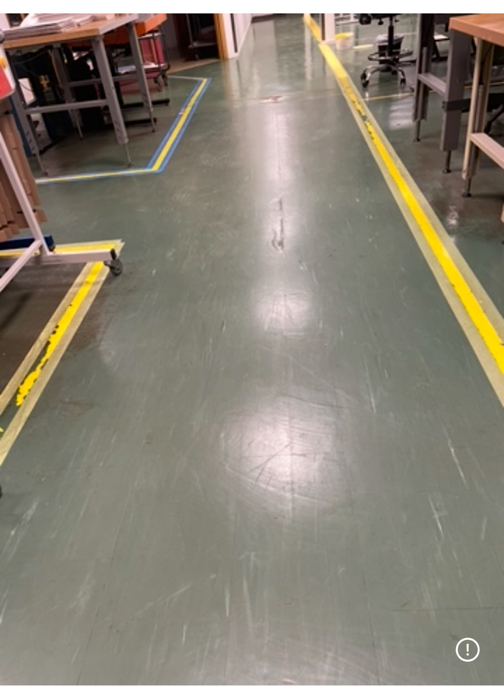
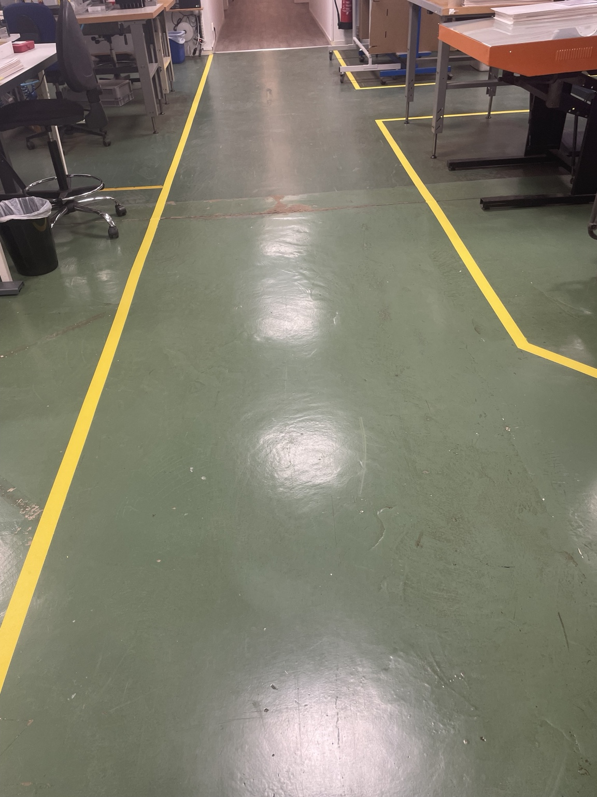

HSB BRF Gröndal
Entré, korridor och gemensamma utrymmen med ett enhetligt slutresultat.
Målagården
Se detaljerna och hämta inspiration till ditt projekt.
Berätta om ett liknande projekt

Entré, korridor och gemensamma utrymmen med ett enhetligt slutresultat.

Fasadmålning med noggrant förarbete och fina detaljer.

Fasad med ett välvårdat och enhetligt slutresultat.

Invändiga ytor med väggar, tak och snickerier i ett jämnt slutresultat.

Invändig och utvändig målning med noggrant förarbete.

Släta ytor och golv med precision – från första gipsskivan till färdigt rum.

Stensättning med stabilt underarbete för ett snyggt och hållbart resultat.

Löpande underhåll och praktisk hjälp som håller fastigheten i gott skick.

Häckplantering och en prydlig avslutning med bark längs planteringen.

Slitna och otydliga markeringar före arbetet.

Tydliga och slitstarka markeringar för säkrare gångvägar och arbetsytor.